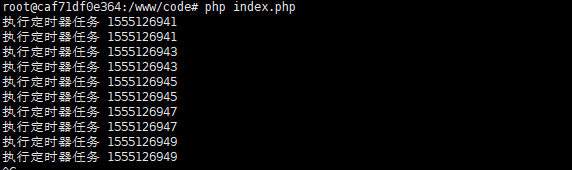
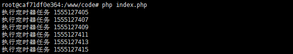

swoole中提供了一个定期器的用法
$server->tick(1000, function() use ($server, $fd) {
$server->send($fd, "hello world");
});开始的时候我是这么用的，看下代码
<?php
$serv = new Swoole\Server("0.0.0.0", 9501);
$serv->set(array(
'worker_num' => 1, //worker process num
));
$serv->on('connect', function ($serv, $fd){
echo "客户端 ".$fd."连接成功 \n";
});
$serv->on('receive', function ($serv, $fd, $reactor_id, $data) {
echo "客户端 ".$fd."发来消息：".$data."\n";
$serv->send($fd, 'Swoole已经介绍到您发送的消息: '.$data);
});
$serv->on('close', function ($serv, $fd) {
echo "客户端 {$fd}关闭连接\n";
});
$serv->on('WorkerStart', function ($serv, $worker_id){
$serv->tick(2000, function(){
echo "执行定时器任务 ".time()." \n";
});
});
$serv->start();开始使用定时器的时候我放到了 onWorkStart 中执行，这样做的话可以保证在单个worker进程的情况下定时器可以正常运行，但是对于swoole来说让它单进程工作显然辱没了它的 "才华" ，于是我将 work_num 设置为2 然后意外就发生啦,如图

我们可以看到有两个定期器在工作一个任务执行了相同的两次，于是这种方法是不对的，当然我们可以在 onWorkStart 中通过判断 worker_id 来避免这种情况，但是后来我发现其实还有另外一种相对来说好点的方法，就是使用 用户自定义进程来做
bool Server->addProcess(Process $process);代码如下：
<?php
$serv = new Swoole\Server("0.0.0.0", 9501);
$serv->set(array(
'worker_num' => 2, //worker process num
));
//创建自定义进程
$process = new Swoole\Process(function($process) use ($serv) {
$serv->tick(2000, function(){
echo "执行定时器任务 ".time()." \n";
});
});
$serv->addProcess($process);
$serv->on('connect', function ($serv, $fd){
echo "客户端 ".$fd."连接成功 \n";
});
$serv->on('receive', function ($serv, $fd, $reactor_id, $data) {
echo "客户端 ".$fd."发来消息：".$data."\n";
$serv->send($fd, 'Swoole已经介绍到您发送的消息: '.$data);
});
$serv->on('close', function ($serv, $fd) {
echo "客户端 {$fd}关闭连接\n";
});
$serv->start();执行效果：

ok！完美执行